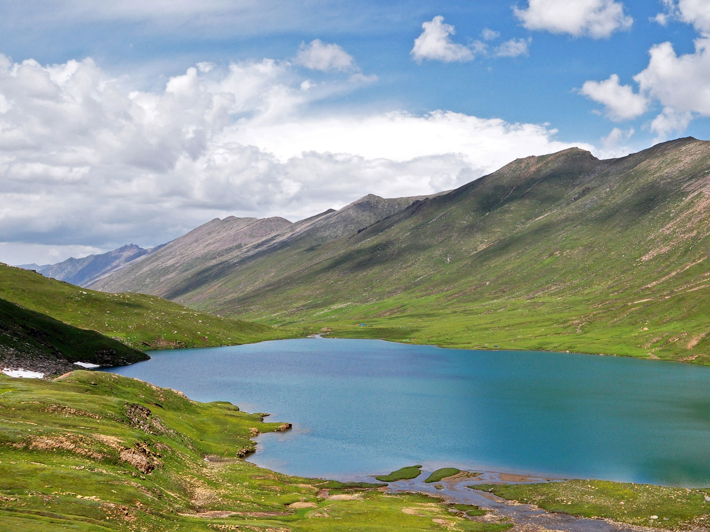
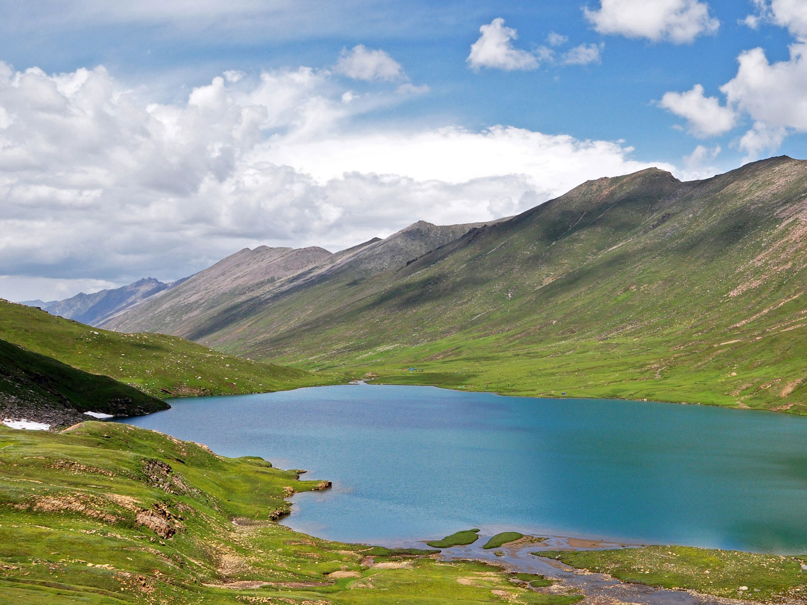

Naran is a town and popular tourist destination in upper Kaghan Valley in the Mansehra District of the Khyber Pakhtunkhwa province of Pakistan. It is located 119 kilometers (74 mi) from Mansehra city at the altitude of 2,409 meters (7,904 ft). It is located about 65 kilometers (40 mi) away from Babusar Top.It is one of the most popular tourist attraction locally as well as internationally.Naran valley is also Pakistan's most visited Valley, around 1.5 million people visit Naran valley every year.
Naran Kaghan is famous as a tourist destination, owing to its pleasant weather in peak season every year thousands of tourists rush to explore the valley. It is also the gateway to Gilgit Hunza in Summers by Babusar Pass. Naran Bazaar is very crowded in the summers with hotels and restaurants offering their services. In 2020, the government expects that 5 million tourists will explore the valley
Naran has a humid continental climate (Koppen Climate Classification Dfb).There is significant rainfall in summers and heavy snowfall in winters. The region is Alpine in geography and climate, with forests and meadows dominating the landscape. The weather usually remains cloudy throughout the year. During winters the temperature often remains below 0 °C with heavy snowfall. In summers the temperature rarely exceeds 15 °C with heavy rainfall. Naran remains busy in summer, starting earlier, and tourism is extending up to late in the fall. The average annual temperature in Naran is 10.1 °C.


Saiful Muluk is a mountainous lake located at the northern end of the Kaghan Valley, near the town of Naran in the Saiful Muluk National Park. At an elevation of 3,224 m (10,578 feet) above sea level, the lake is located above the tree line, and is one of the highest lakes in Pakistan.


Saiful Muluk is located in the Mansehra district of Khyber Pakhtunkhwa, about 9 kilometres (5.6 mi) north of Naran,in the northern part of Kaghan Valley. Malika Parbat, the highest peak in the valley is near the lake.The lake is accessible from the nearby town of Naran during the summer season but access during winter is limited, as heavy snowfall and landslides threaten to cutoff the lake from other regions.
Saiful Muluk was formed by glacial moraines that blocked the water of the stream passing through the valley.The Kaghan Valley was formed in the greater Pleistocene Period dating back almost 300,000 years when the area was covered with ice. Rising temperatures and receding glaciers left a large depression where glaciers once stood. Melting water collected into the lake.
The lake has rich eco-diversity and holds many species of blue-green algae. Large brown trout are found in the lake, up to about seven kilograms.About 26 species of vascular plant exist in the area, with Asteraceae the most commonly found species. Other species commonly found in the region are: Ranunculaceae, Compositae, Cruciferae, Gramineae, Apiaceae, Leguminosae, Scrophulariaceae and Polygonaceae.
The Lake Saiful Muluk is named after a legendary prince. A fairy tale called Saif-ul-Muluk, written by the Sufi poet Mian Muhammad Bakhsh, talks of the lake.It tells the story of the Egyptian Prince Saiful Malook who fell in love with a fairy princess named Princess Badri-ul-Jamala at the lake.


Dudipatsar Lake is also known as Dudipat Lake, is a lake encircled by snow clad peaks in Lulusar-Dudipatsar National Park. The lake lies in the north end of the Kaghan Valley, in the Mansehra District, Khyber Pakhtunkhwa province, in northern Pakistan.
The lake's water is greenish blue hue and very cold, at an elevation of 3,800 metres (12,500 ft). The surrounding mountains, with snow patches in the shady dales, average around 4,800 metres (15,700 ft) in elevation. Their natural habitat is in the Western Himalayan alpine shrub and meadows ecoregion.Lulusar Lake, also in the park, is the primary headwaters of the Kunhar River. Saiful Muluk National Park, with Saif ul Maluk Lake, is adjacent in the 150 kilometres (93 mi) long Kaghan Valley region and together the parks protect 88,000 hectares (220,000 acres).
The lake and its wetlands habitats are of significant ecological importance for resident fauna and migratory waterfowl.Some of the park's fauna includes the snow leopard, black bear, marmot, weasel, lynx, leopard, Himalayan snowcock, and snow partridge
The 2005 Kashmir earthquake in North Pakistan made access more difficult. However, since 2006 the Pakistan government has taken steps to restore tourism in the Kaghan Valley, including rebuilding and new tourism facilities and infrastructure.


 
